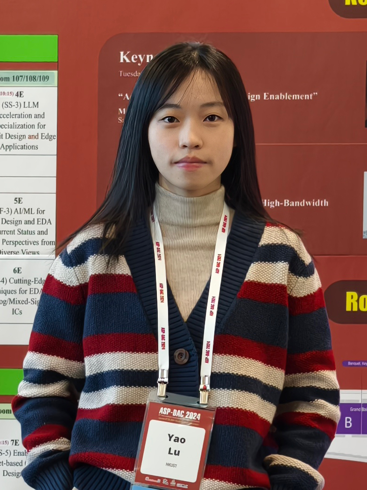

|  | Yao LU (陆瑶)Ph.D. Candidate
|
Biography
I am a second-year Ph.D. Student at the Department of Electronic and Computer Engineering, the Hong Kong University of Science and Technology (HKUST),
under the supervision of Prof. Zhiyao Xie. Prior to that, I obtained my Master's degree from Fudan University under the supervision of Prof. Lingli Wang and bachelor's degree from Southeast University.
My research interest is to solve critical problems in electronic design automation (EDA) with advanced artificial intelligence (AI) methods.
Research Interest
AI in EDA
CPU Design Power Modeling
Approximate Computing
Publication
[C9] Q. Zhang, M. Li, Y. Lu, Z. Xie, “FirePower: Towards a Foundation with Generalizable Knowledge for Architecture-Level Power Modeling”, 30th Asia and South Pacific Design Automation Conference (ASP-DAC), 2025.
[C8] S. Liu*, Y. Lu*, W. Fang*, M. Li, Z. Xie, “OpenLLM-RTL: Open Dataset and Benchmark for LLM-Aided Design RTL Generation”, IEEE/ACM International Conference on Computer Aided Design (ICCAD), 2024.(Invited Paper)
[C7] Y. Lu*, Q. Zhang*, Z. Xie, “Unleashing Flexibility of ML-based Power Estimators Through Efficient Development Strategies”, 29th ACM/IEEE International Symposium on Low Power Electronics and Design (ISLPED), 2024. (Best Paper Nomination)
[J3] S. Liu, W. Fang, Y. Lu, J. Wang, Q. Zhang, H. Zhang, Z. Xie, “RTLCoder: Fully open-source and efficient llm-assisted rtl code generation technique”, IEEE Transactions on Computer-Aided Design of Integrated Circuits and Systems (TCAD), 2024.
[J2] W. Fang, Y. Lu, S. Liu, Q. Zhang, C. Xu, LW. Wills, H. Zhang, Z. Xie, “Transferable pre-synthesis ppa estimation for rtl designs with data augmentation techniques,” IEEE Transactions on Computer-Aided Design of Integrated Circuits and Systems (TCAD), 2024.
[C6] S. Liu, W. Fang, Y. Lu, Q. Zhang, H. Zhang, Z. Xie, “RTLCoder: Outperforming gpt-3.5 in design rtl generation with our open-source dataset and lightweight solution”, IEEE LLM Aided Design Workshop (LAD), 2024. (Best Paper Nomination)
[C5] Y. Lu*, S. Liu*, Q. Zhang, Z. Xie, “RTLLM: An open-source benchmark for design rtl generation with large language model”, 29th Asia and South Pacific Design Automation Conference (ASP-DAC), 2024.
[C4] W. Fang, Y. Lu, S. Liu, Q. Zhang, C. Xu, LW. Wills, H. Zhang, Z. Xie, “MasterRTL: A Pre-Synthesis PPA Estimation Framework for Any RTL Design,” IEEE/ACM International Conference on Computer Aided Design (ICCAD), 2023.
[J1] Z. Li, S. Zheng, J. Zhang, Y. Lu, J. Gao, J. Tao, L. Wang, “Adaptable Approximate Multiplier Design Based on Input Distribution and Polarity,” IEEE Transactions on Very Large Scale Integration (VLSI) Systems, 2022.
[C3] S. Zheng, Z. Li, Y. Lu, J. Gao, J. Zhang and L. Wang, “HEAM: High-Efficiency Approximate Multiplier optimization for Deep Neural Networks,” IEEE International Symposium on Circuits and Systems (ISCAS), 2022.
[C2] Y. Lu, J. Zhang, S. Zheng, Z. Li, L. Wang, “Low Error-Rate Approximate Multiplier Design for DNNs with Hardware-Driven Co-Optimization,” IEEE International Symposium on Circuits and Systems (ISCAS), 2022.
[C1] Y. Dai*, S. Liu*, Y. Lu*, H. Zhou, SR. Rasoulinezhad, PHW. Leong, L. Wang, “APIR-DSP: An approximate PIR-DSP architecture for error-tolerant applications,” International Conference on Field-Programmable Technology (ICFPT), 2021.
Education
Ph.D., Department of Electronic and Computer Engineering, The Hong Kong University of Science and Technology (HKUST), Aug/2023 - Now
M.Eng., State Key Laboratory of ASIC & System, Fudan University (FDU), Sep/2020 - Jun/2023
B.Eng., School of Electronic Science and Engineering, Southeast University (SEU), Aug/2016 - Jun/2020
Experience
Huawei Shanghai, China
Research Intern, Jul. 2022 - May. 2023
NVIDIA Shanghai, China
ASIC PD Intern, Jul. 2021 - Sept. 2021